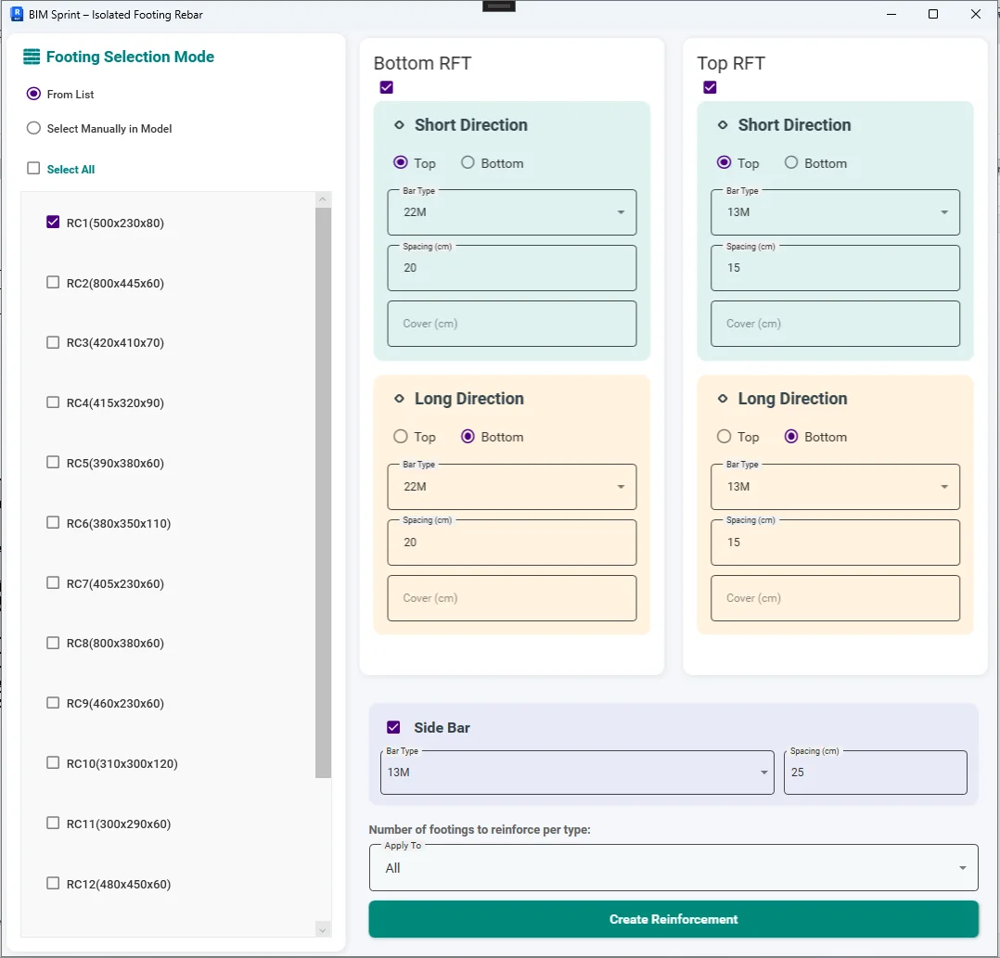
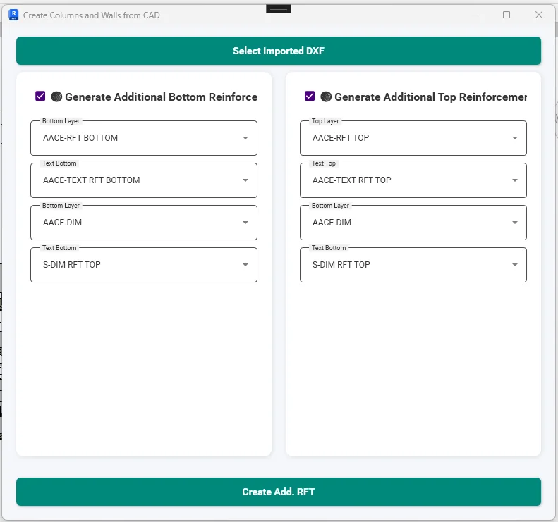
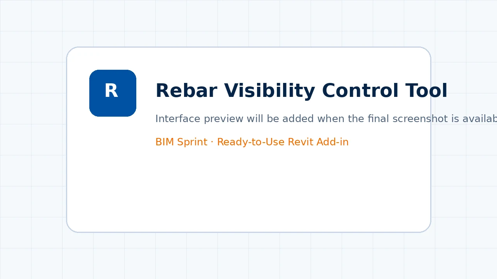
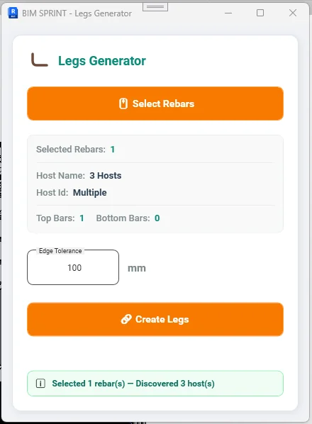
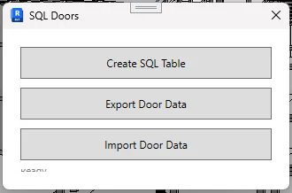

StructureReinforcement
Isolated Footing Rebar Tool
Automates all reinforcement detailing for isolated footings in a single operation — placing mesh layers, side bars, and cover constraints automatically.
Browse 16 production-focused tools for reinforcement, CAD-to-Revit modeling, room finishes, parameter management, QA/QC, and engineering productivity.


16 tools match your filters.

Automates all reinforcement detailing for isolated footings in a single operation — placing mesh layers, side bars, and cover constraints automatically.

A complete column detailing engine — handles longitudinal bars, starter bars (dowels), and stirrups with variable spacing zones, fully compliant with the Egyptian Code of Practice.

Reads an imported CAD drawing directly inside Revit and converts all annotated additional reinforcement into fully parametric Revit rebar — zero manual placement required.

A one-click visibility manager for all rebar elements across any Revit view — eliminating the multi-step Visibility/Graphic Overrides workflow entirely.
Reads CAD layer geometry and automatically generates Revit foundation elements — isolated footings and raft slabs — with correct dimensions, types, naming conventions, and level offsets.

Processes a CAD plan and generates all structural columns (rectangular and circular) and RC walls as parametric Revit elements — fully typed, named, and placed at correct levels.

Reads slab boundaries from an imported CAD layer and generates Revit slab elements with correct types, elevations, and Drop Panels — including level adjustment for all slabs.

Reads beam geometry from an imported CAD plan and places all structural beams — including irregular cross-sections, L-shaped, T-shaped, and circular beams — across any number of floors simultaneously.

A centralized model control panel — browse all categories and types, select any combination of elements, and perform bulk actions (isolate, hide, delete, override color) from a single interface.
A room management panel that lists all rooms in the project, displays their properties, and lets architects change finish materials while viewing the result live in a Section Box — in real time.

A data management tool for Revit instance parameters — copy, move, or delete parameter values across element instances, or assign new values to any parameter type directly from the interface.

The companion to the Instance Parameter Tool — same powerful interface but operating on Revit family type parameters rather than individual instances.

An intelligent Revit automation engine that instantly creates structural hook legs for rebar layers at concrete boundaries, openings, and drop panels across slabs, rafts, and beams.

An intelligent selection interface — pick a single element, choose any instance parameter, select a value, and instantly select all matching elements in the active view.
A centralized warning management dashboard — display all project warnings and clashes in a single list, and instantly isolate, color-code, and zoom into conflicting elements in a dedicated 3D view with an automatically sized section box.

A bi-directional data bridge — export all door data from Revit to a SQL Server database, edit parameters externally (via Excel, SQL, or web tools), and sync the changes back to Revit parameters in seconds.
Try a broader search or reset the filters.